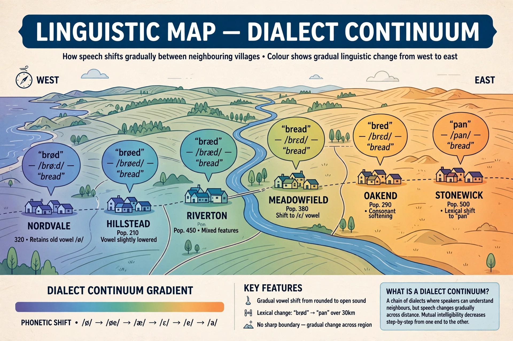

| Abstand and Ausbau | |
|---|---|
| Field | Sociolinguistics |
| Introduced by | Heinz Kloss (1967) |
| Abstand | "Language by distance" — inherently distinct |
| Ausbau | "Language by development" — elaborated into a standard |
In sociolinguistics, an Abstand language is a language variety that is sufficiently different from any other that it is considered a separate language on purely linguistic grounds, while an Ausbau language is a standard variety that has been deliberately developed ("built out", German Ausbau) — through codification, a literary tradition, and use in formal domains — so that it functions as an autonomous language even though it may be structurally close to another standard. The framework was introduced by the German linguist Heinz Kloss in 1967 to explain why the line between "language" and "dialect" is as much social and political as linguistic.
Abstand is German for "distance" or "gap". A language with great Abstand — such as Basque in relation to Spanish, or Finnish in relation to Swedish — would be recognized as a distinct language by any linguist regardless of politics. Ausbau, meaning "expansion" or "building out", describes the process by which a variety acquires an independent written standard, grammar, dictionary, literature, and institutional use. A variety can score high on one dimension and low on the other.
Classic Ausbau pairs include Serbian and Croatian, and the Hindi–Urdu pair: their everyday spoken forms are largely mutually intelligible, but separate standards, scripts, and literary traditions make them full languages by development. Bokmål and Nynorsk in Norway, and the standardized forms of Macedonian and Bulgarian, are also commonly discussed in Ausbau terms. Conversely, the mutually unintelligible varieties often called "dialects" of Chinese, such as Mandarin and Cantonese, have high Abstand but historically shared one written standard. Scots is often presented as a case of a variety with considerable Abstand from English whose Ausbau was interrupted after the Union of the Crowns.
Kloss also proposed the concept of the Dachsprache ("roofing language"), a standard variety that shelters related dialects. The framework is related to the popular saying attributed to Max Weinreich that "a language is a dialect with an army and a navy", and to studies of language standardization and corpus planning.